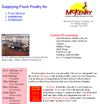

| |
 |
Made two years ago, BenRay Photography is the web site for the official photographer of America's Junior Miss, a nationwide competition held annually in Mobile, Alabama. |
| Just finished, CuckooNet is the web site of Michael's employer, Cuckoo Advanced Networking Solutions, a Houston, Texas, based company specializing in network and systems consulting. |
 |
|
Still in the works, Dayah is the author's personal web site. It contains basic information about him, a list of his e-mail addresses, web sites and pages he has made, the components of his computer, as well as his class schedule. |
| Finished six months ago, Lacey Nicole Chabert is a fan site for the upcoming teen starlet Lacey Chabert who stars in Party of Five (Claudia Salinger) as well as the movie Lost in Space (Penny Robinson). Lacey Nicole Chabert receives the most traffic of the author's sites. |
 |
|  |
Completed under a year ago, McKenry is the web site for McKenry Produce Company, Inc., a Knoxville, Tennessee, company that supplies fresh poultry for institutions, distributors, and restaurants. |
| | |
|
|